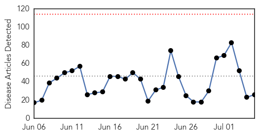
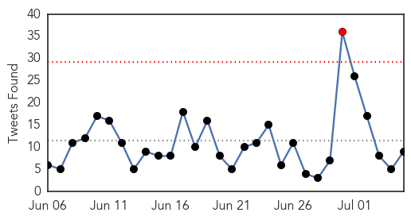
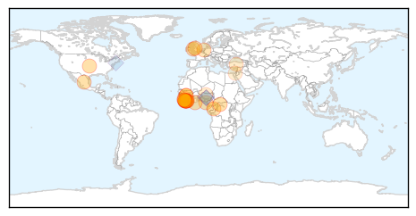
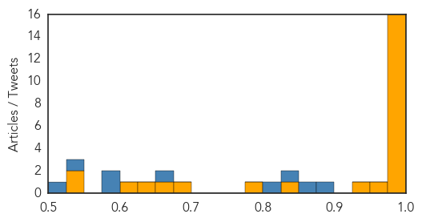
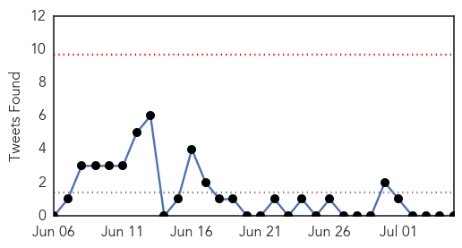
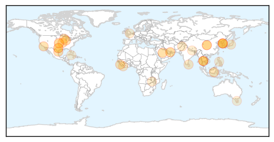

Ebola
30-Day Web Trend
0 alerts, 0 warnings

30-Day Twitter Trend
0 alerts, 0 warnings

Article Locations
Article Confidences
Top Articles:
- 1.000
- Liberia Records Ebola Death After Country Declared Virus
- 1.000
- Liberia investigating animal link after Ebola re-emerges
- 1.000
- Liberia confirms third Ebola case in new outbreak
- 1.000
- United Kingdom Africa
- 1.000
- Update on Ebola in U.S.: New CDC Protocols, Rapid Response Team, Czar
- 1.000
- World fears mount that Ebola battle being lost « Alshahid Network
- 1.000
- Recurrence of Ebola transmission in Liberia
- 0.999
- UK Treating Suspected Ebola Patient In Liverpool Hospital
- 0.999
- Liberia confirms third Ebola virus case
- 0.998
- Ebola Resurgence under Control, Liberia Assures Nigeria, Articles
- 0.995
- Instapundit Blog Archive LIBERIA: 200 Reportedly Had Contact With Ebola Victim. “The World Health Organization reported Fri…
- 0.994
- Liberia announces fresh Ebola death
- 0.992
- Various Insurance Lines Could Potentially Be Affected by Ebola
- 0.990
- Suspected Congo Ebola victims test negative
- 0.979
- 22 Fishermen Screened For Ebola In Sekondi
- 0.978
- - BREAKING: Man taken ill in Llandudno being tested for Ebola
- 0.955
- Ebola Virus Reportedly Creeps into Akwa-Ibom, Govt Keeps Sealed Lips
- 0.928
- LIBERIA: Gov’t Extends Stay-Home Order For Another Month
- 0.848
- Liberian Government Receives a Donation of €3.6 Million Worth of Anti-Ebola Materials, Supplies from European Union
- 0.795
- TLC Africa
- 0.679
- International Finance Corporation Supports Small & Medium Enterprises to Cope with Ebola
- 0.651
- UK troops make significant contribution to Ebola fight
- 0.646
- Arabia Health Insurance International Saudi
- 0.608
- Open Letter To President Muhammadu Buhari, GCFR, By Nigerian Volunteers To The West African Ebola (ASEOWA) Mission – Appeal for Intervention
- 0.548
- Report reveals malpractices on Ebola fund
- 0.545
- A short history of AIDS
Top Tweets:
- 0.981
- Suspected Congo Ebola victims test negative for the virus - Yahoo News http://t.co/cNJt8KkxLu ebola EVD
- 0.975
- EJS Lauds US Assistance in Containing Ebola Outbreak > Monro - Front Page Africa http://t.co/qWALvMvn2G ebola EVD
- 0.972
- Liberia's Health Ministry Clarifies Hazard Pay for Ex-Ebola Crew > Monro - Front Page Africa http://t.co/RYj2JCsnIy ebola EVD
- 0.962
- UK Treating Suspected Ebola Patient In Liverpool Hospital - Tech Times http://t.co/IbfdoXaL4T ebola EVD
- 0.869
- Doubts over integrity of Ebola trials - GhanaWeb http://t.co/9DcMpbUube ebola EVD
- 0.833
- Suspected Congo Ebola victims test negative for the virus - Yahoo News http://t.co/iswNHx1YBs
- 0.774
- RT: One less Ebola outbreak to worry about. Sick hunters in Congo test negative for virus http://t.co/LuyelZLAvA…
- 0.744
- EJS Lauds US Assistance in Containing Ebola Outbreak > Monro - Front Page Africa http://t.co/cWruXQ7pw7
- 0.511
- Feds Launch National Ebola Training, Education Center - http://t.co/5tghAopIy0 http://t.co/nVn4QHjxkC ebola EVD
Unknown
30-Day Web Trend
2 alerts, 8 warnings

30-Day Twitter Trend
0 alerts, 2 warnings

Article Locations
Article Confidences
Top Articles:
- 0.997
- Additional MERS case reported
- 0.995
- Thai hospital discharges only MERS case after found virus-free
- 0.993
- A 75-Year-Old MERS Patient In Thailand Declared Virus-Free
- 0.992
- MERS incubation period in doubt
- 0.990
- MERS incubation period in doubt
- 0.976
- New MERS cases at SMC trigger patient transfers-INSIDE Korea JoongAng Daily
- 0.964
- Lacey motel closes after possible Legionnaires’ outbreak
- 0.955
- Hidalgo County waterborne illnesses skyrocket with floods
- 0.943
- Beyond Lyme, new illnesses, more reason to watch for ticks - AdirondackDailyEnterprise.com
- 0.917
- Chicago Tribune
- 0.894
- 180 possibly infected by superbug outbreak at UCLA hospital
- 0.852
- Salmonella Sunday - Update on Outbreaks: Tarheel Q, Boise Co-op and Supermercado Los Corrales
- 0.843
- Local Airports on High Alert against MERS
- 0.830
- Sierra Leone maternal deaths halved but cases go unreported in North due to bad roads
- 0.790
- Flight occupancy rates drop in June on MERS scare
- 0.778
- (LEAD) Flight occupancy rates drop in June on MERS scare: data
- 0.764
- Flight occupancy rates drop in June on MERS scare: data
- 0.731
- Lyme Disease: The CDC’s Greatest Coverup & What They Don’t Want You To Know
- 0.722
- UT Health NE providers merge mental health care, primary care
- 0.695
- Avoidable disease: For too many, all it takes is modern sanitation
- 0.683
- 05.07.00 Vanni medical situation dire say NGOs
- 0.653
- Access to facilities, Liberia’s health system plight
- 0.629
- Merck’s Former Doctor Predicts Gardasil To Become The Greatest Medical Scandal Of All Time
- 0.624
- Kotha Majeru village in the grip of a viral fever epidemic
- 0.606
- Cost of a dip: Swimming in open water poses threat to health
- 0.600
- Can Arthritis Cause Hand Tingling Vallejo California
- 0.598
- Knee Ray X Arthritis Vallejo
- 0.594
- Don't forget iftar water, warn doctors
- 0.582
- High Plains Journal: Ag News
- 0.553
- Infested hospitals called in pest control nearly 5,000 times in one year to tackle vermin
- 0.532
- Government health facilities short of essential drugs
- 0.529
- The Post
- 0.509
- 7.1m Filipinos have phones, but no toilets
- 0.504
- Cuba First Country to Halt Mother-to-child Transmission of HIV and Syphilis
- 0.502
- Hospitals’ ice violence
Top Tweets:
-
No tweets found for Jul 05, 2015